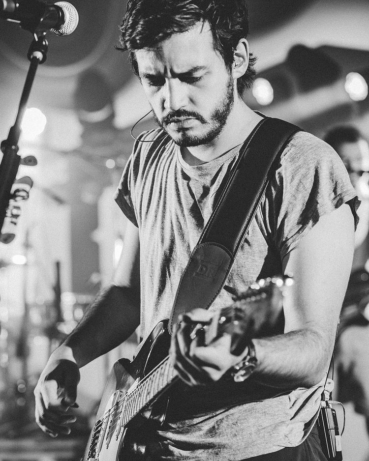
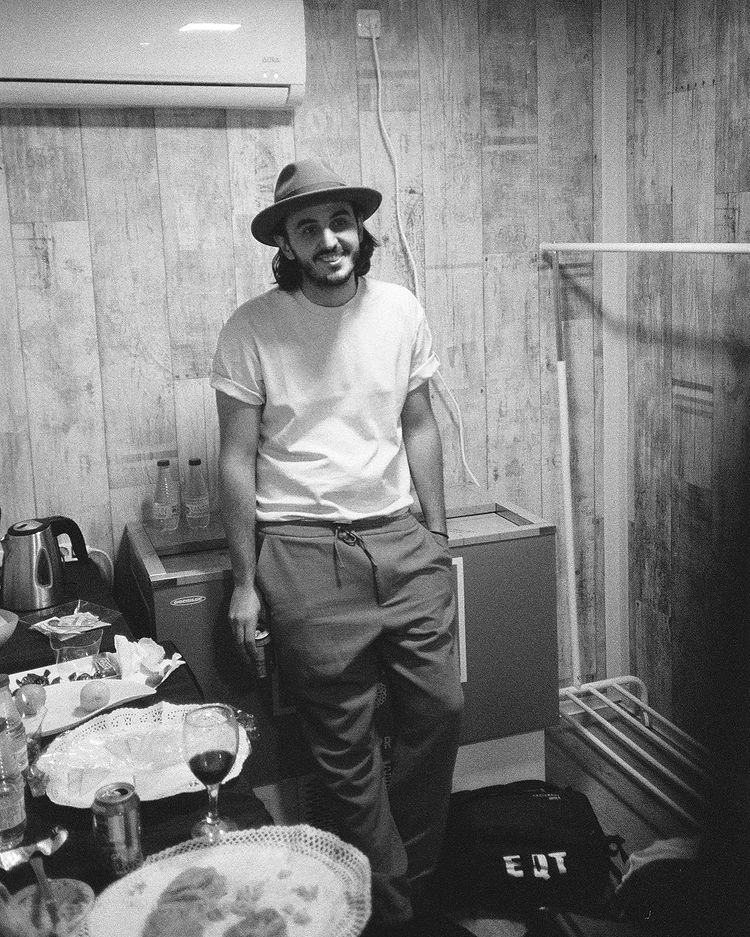
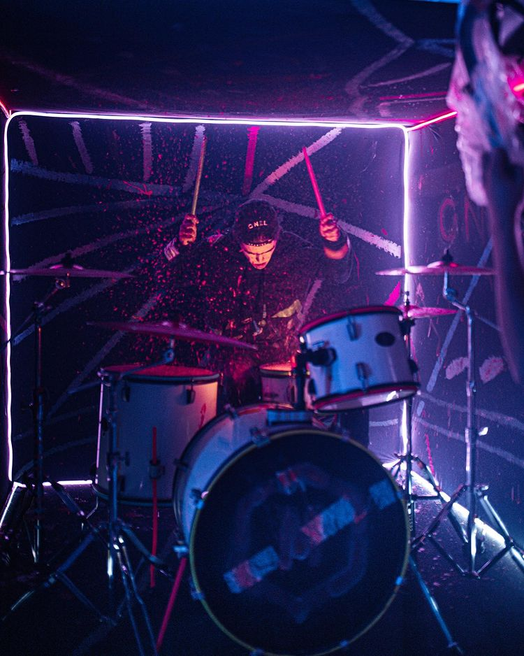

Morat es una banda colombiana de folk-pop formada originalmente en Bogotá en 2011. Se dieron a conocer en 2015 con su éxito «Mi nuevo vicio». Sus integrantes son Juan Pablo Isaza Piñeros, Juan Pablo Villamil Cortés, Simón Vargas Morales y Martín Vargas Morales. Anteriormente, hasta finales de 2016 había formado parte de la banda Alejandro Posada, pero él decidió abandonar el grupo, por lo que fue sustituido por Martín Vargas, hermano de Simón.
Integrantes

Juan Pablo Villamil Cortés
Vocalista principal de Morat, toca el banjo, ukelele y guitarra. Es egresado de Música e Ingeniería Industrial de la Universidad de los Andes.

Juan Pablo Isaza Piñeros
Vocalista principal y guitarrista de Morat, también toca piano y ukelele. Estudia Administración de Empresas de la Universidad de los Andes.
Simón Vargas Morales
Vocalista y bajista de Morat, maneja los modulares. Es escritor, en 2020 presentó su primer libro "A la orilla de la Luz". Estudia Historia en la Universidad de los Andes.

Martín Vargas Morales
Vocalista y batería de Morat, además toca los sintetizadores. Es egresado de Diseño Gráfico de la Universidad de los Andes. Es cofundador de la reconocida marca GNrL studios.
Álbumes
M1. Es el nombre del primer álbum de estudio de la banda colombiana
Morat que se publicó el 17 de junio de 2016.
M2. Es el nombre del segundo álbum de estudio de la banda colombiana Morat, publicado el 25 de octubre de 2018.
M3. Es el tercer álbum de estudio de la banda colombiana Morat,
publicado el 16 de julio de 2021.